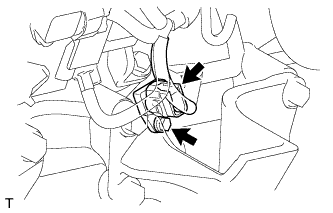
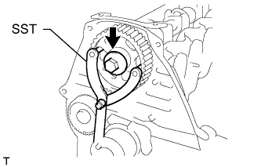
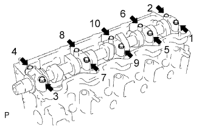
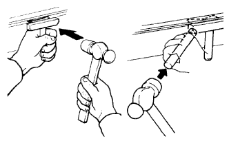
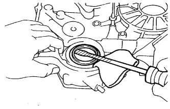

БЛОК ДВИГАТЕЛЯ > РАЗБОРКА |
| 1. REMOVE CRANKSHAFT POSITION SENSOR |
|  |
Disconnect the crankshaft position sensor connector.
Remove the bolt and crankshaft position sensor.
| 2. REMOVE CAMSHAFT TIMING PULLEY |
 |
Using the crankshaft pulley bolt, turn the crankshaft 90° counterclockwise and align the timing mark of the crankshaft timing pulley with the protrusion of the timing belt case.
 | Turn |
| *1 | Timing Mark |
| *2 | Protrusion |
|  |
Using SST, loosen the pulley bolt.
 |
Using SST, separate the timing pulley from the camshaft.
Remove the pulley bolt and timing pulley.
Remove the timing pulley woodruff key.
| 3. REMOVE NO. 2 TIMING BELT COVER |
Remove the 4 bolts and timing belt cover.
| 4. REMOVE CYLINDER HEAD COVER SUB-ASSEMBLY |
Remove the 9 bolts, nut, cylinder head cover and gasket.
| 5. REMOVE CAMSHAFT OIL SEAL RETAINER |
Remove the 4 bolts, retainer and gasket.
| 6. REMOVE CAMSHAFT OIL SEAL |
 |
Using a screwdriver and hammer, tap out the oil seal.
| 7. REMOVE CAMSHAFT |
 |
Turn the camshaft with a wrench so that the key groove faces upward.
| *1 | Upward |
| *2 | Key Groove |
|  |
Uniformly loosen and remove the 10 bearing cap bolts in several steps in the sequence shown in the illustration.
Remove the 5 bearing caps and camshaft.
| 8. REMOVE CYLINDER HEAD SUB-ASSEMBLY |
Uniformly loosen and remove the 18 cylinder head bolts in several steps in the sequence shown.
Lift the cylinder head from the dowels on the cylinder block to remove it, and place the cylinder head on wooden blocks on a workbench.
| 9. REMOVE CYLINDER HEAD GASKET |
| 10. REMOVE NO. 2 TIMING BELT IDLER SUB-ASSEMBLY |
Remove the bolt, No. 2 timing belt idler and spacer.
| 11. REMOVE WATER PUMP ASSEMBLY |
 |
Remove the 6 bolts and tension spring bracket.
Remove the water pump and gasket.
| 12. REMOVE NO. 1 TIMING BELT IDLER SUB-ASSEMBLY |
Remove the 2 bolts (A and B).
 |
Loosen the bolt (C), and remove the No. 1 timing belt idler.
| 13. REMOVE CRANKSHAFT TIMING PULLEY |
 |
Using a screwdriver, remove the crankshaft timing pulley.
| 14. REMOVE OIL PAN SUB-ASSEMBLY |
Remove the 16 bolts and 2 nuts.
|  |
Insert the blade of an oil pan seal cutter between the oil pan and cylinder block, cut off the applied sealer and remove the oil pan.
| 15. REMOVE OIL STRAINER SUB-ASSEMBLY |
Remove the 2 bolts, 2 nuts, oil strainer and gasket.
| 16. REMOVE TIMING BELT CASE SUB-ASSEMBLY |
 |
Remove the 5 bolts, timing belt case and gasket.
| 17. REMOVE FRONT CRANKSHAFT OIL SEAL |
|  |
Using a screwdriver, pry out the oil seal.
| 18. REMOVE REAR CRANKSHAFT OIL SEAL RETAINER |
Remove the 4 bolts, oil seal retainer and gasket.
| 19. REMOVE REAR CRANKSHAFT OIL SEAL |
Using a screwdriver and hammer, tap out the oil seal.